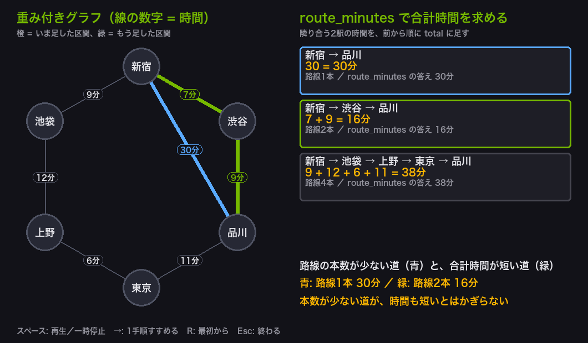
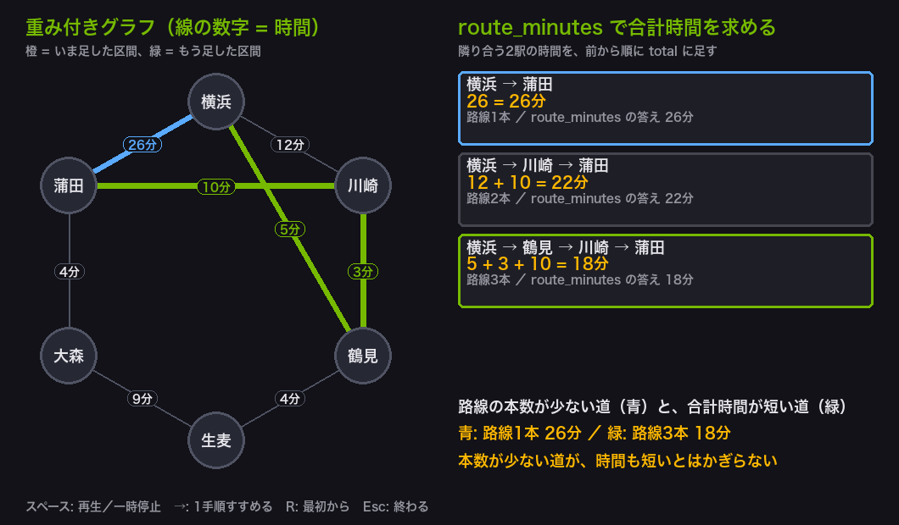
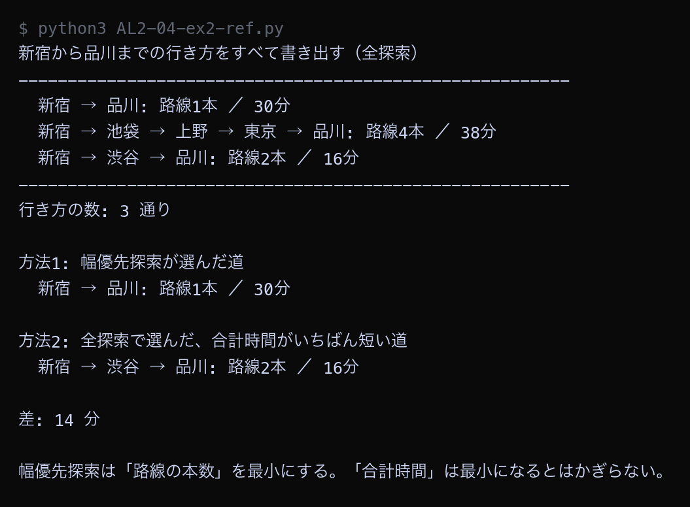
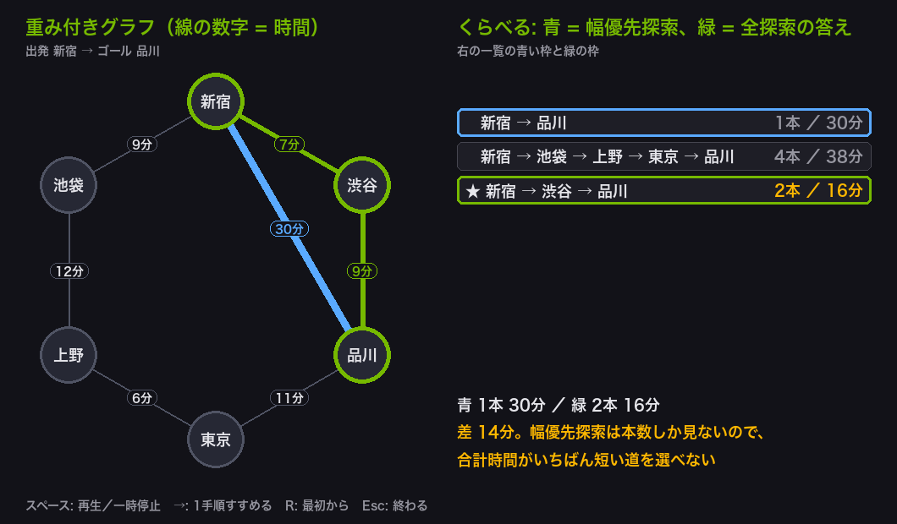
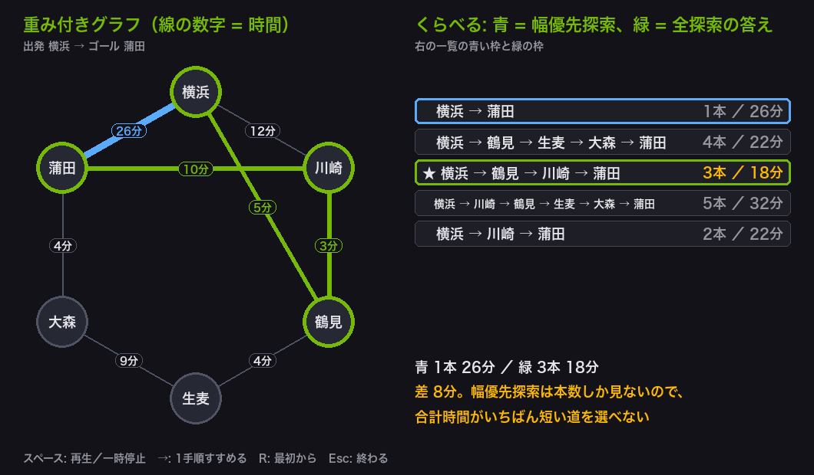

例題
例題1と例題2のコードを実行してください。まず作業フォルダを用意します。
VS Code でフォルダとファイルを用意する
Step 1: 作業フォルダを作る
- デスクトップに AL2 という名前のフォルダを作る（後期の授業ではずっと同じフォルダを使う）
- AL2 フォルダの中に No04 という名前のフォルダを作る
└── AL2/
├── No03/ ← 前回のファイル
└── No04/ ← 第4回はここに保存
Step 2: VS Code でフォルダを開く
- Visual Studio Code を起動する
- メニューから 「ファイル」→「フォルダーを開く」を選ぶ
- Step 1 で作った AL2/No04 フォルダを選んで開く
左側のエクスプローラーに No04 フォルダの中身が表示される（最初は空）。
Step 3: 例題ごとにファイルを作って実行する
- 左側エクスプローラーの No04 の横にある 新しいファイルアイコンをクリック
- ファイル名を入力して Enter（例題1なら
AL2-04-ex1.py） - 例題のコードブロック右上の コピーボタンをクリック
- VS Code の編集画面に 貼り付ける（Ctrl+V / Cmd+V）
- 保存する（Ctrl+S / Cmd+S）
- 右上の ▷（再生ボタン）をクリックして実行する
今回作るファイル（実践）: AL2-04-ex1.py, AL2-04-ex2.py。参考のコードを保存するときは、名前の最後に -ref を付ける
- 参考: 完成したコード。大事な行にコメントが付いていて、★ の行が実践の穴にあたる。まず読んで流れをつかみ、穴埋めのヒントにする
- 実践: アルゴリズムの要になる行が
____（穴）になっている。 丁寧なコメントと、コードの下の「ヒント」「候補」を見て、自分で埋めてから実行する
ファイル名は、参考が AL2-04-ex1-ref.py（ref = reference、参考）、
実践が AL2-04-ex1.py のように分けます（同じ名前にすると上書きされてしまうため）。
課題で使うのは実践のファイルです。
実行結果がページの画像と同じになれば正解です。ちがえば、どの穴がちがうかを考えて直します。
どうしても分からないときだけ、参考のコードと見比べてください。
グラフを絵で表示する道具（pygame）
今回の例題も、第2・3回と同じく pygame（パイゲーム: Python で絵やゲームの画面を作る道具）の窓で、 重み付きグラフを丸と線と数字で描き、時間を足していくようすや探索の進み方をアニメーションで見せます。
1. pygame が入っているか確かめる
第2・3回で入れた人は、そのまま使えます。VS Code の「ターミナル」→「新しいターミナル」で次の1行を打ちこみ、Enter を押します。
2.6.1 のような数字が出れば入っています。
ターミナル（Windows）
py -c "import pygame; print(pygame.version.ver)"
ModuleNotFoundError と出たら、まだ入っていません。次の1行で入れます
（うまくいかないときは第2回の「うまくいかないとき」の表を見る）。
ターミナル（Windows）
pip install pygame
Mac の人は pip のかわりに pip3、py のかわりに python3 と打つ。
2. 窓の操作（第2・3回と同じ）
| キー | 動き |
|---|---|
| スペース | 自動で再生／一時停止 |
| →（右矢印） | 1手順だけ進める（標準課題の図を描くときに便利） |
| R | 最初からやり直す |
| Esc または窓の × | 終わる（窓を閉じるとプログラムも終わる） |
窓に絵を描くコードは、各例題ファイルのいちばん下 （「ここから下は、重み付きグラフを pygame の窓に絵で表示するための道具です」と書いた行より下）に入っています。そこは読まなくてかまいません。 ファイルは1つだけで動きます。ターミナルに結果が出たあとで窓が開きます。窓が見当たらないときは、タスクバー（Mac は Dock）を見てください。 丸の並べ方は、線の交わりが少なくなるように窓が自動で決めます（紙の路線図と位置がちがっても、つながり方と時間は同じ）。
今回のキーワード
| 用語 | 説明 |
|---|---|
| 重み | 辺ごとに書き込む数値。乗車時間・距離・料金など「その辺を通るのにかかるもの」を表す。 |
| 重み付きグラフ | すべての辺に重みが付いているグラフ。重みのないグラフは、すべての重みが1のグラフと考えることもできる。 |
| コスト | 重みの言いかえ。「その道を通るために支払うもの」という意味で使う。合計コストが小さいほど良い。 |
| タプル | ("渋谷", 7) のように、丸かっこでいくつかの値をまとめたもの。リストと違って、あとから中身を書き換えられない。 |
| 関数 | def 名前(引数): で作る、ひとまとまりの処理。route_minutes(route) のように呼ぶと、return の値が返ってくる。 |
| 全探索 | 考えられる候補をすべて書き出して1つずつ調べる方法。必ず正しい答えが出るが、候補が増えると終わらなくなる。 |
重み付きグラフで、行き方ごとの合計時間を求める
6つの駅からなる路線図に、区間ごとの乗車時間を重みとして書き込み、隣接リストでPythonに書き写します。 そのうえで、出発駅から目的駅までの3通りの行き方について、路線の本数と合計時間を求めて比べます。
| コードの部分 | やっていること |
|---|---|
railway = { ... } | 重み付きの隣接リスト。となりの駅を ("駅の名前", 時間) の2つ組で並べる |
for name, minutes in railway[station]: | 2つ組の1つ目（駅の名前）を name、2つ目（時間）を minutes に入れて1つずつ見る |
def route_minutes(route): | 行き方 route の隣り合う2駅ごとに時間を探し、合計 total に足していく（1章の「合計時間の求め方」の図と同じ） |
fewest と fastest | 「路線の本数がいちばん少ない道」と「合計時間がいちばん短い道」を、それぞれ選ぶ |
実行すると、ターミナルに隣接リストと3通りの比較が出たあと、窓が開きます。窓の読み方は次のとおりです。
| 窓に表示されるもの | 読み方 |
|---|---|
| 左: 重み付きグラフ | 丸 = 駅、線 = 路線、線のまん中の数字 = 時間。橙の線が「いま足した区間」、緑の線が「もう足した区間」 |
| 右: 行き方ごとの箱 | 上の行が行き方、下の行が足し算（例 12 + 10 = 22分）。route_minutes の答えも並べて出る |
| 最後の画面 | 青 = 路線の本数がいちばん少ない道、緑 = 合計時間がいちばん短い道 |
例題1（参考）── 完成したコード。★ の行が実践の穴にあたるので、そのコメントを穴埋めのヒントにする。保存するなら AL2-04-ex1-ref.py の名前で
AL2-04-ex1-ref.py
Python ── AL2-04-ex1-ref.py # 重み付きグラフ: となりの駅を (駅の名前, 時間) の2つ組で並べる # 例 ("渋谷", 7) は「渋谷へ行ける。7分かかる」。1本の路線は両方の駅の行に同じ時間で書く railway = { "新宿": [("渋谷", 7), ("池袋", 9), ("品川", 30)], "渋谷": [("新宿", 7), ("品川", 9)], "池袋": [("新宿", 9), ("上野", 12)], "上野": [("池袋", 12), ("東京", 6)], "東京": [("上野", 6), ("品川", 11)], "品川": [("新宿", 30), ("渋谷", 9), ("東京", 11)], } print("重み付きグラフ（数字は乗車時間・分）") print("-" * 50) for station in railway: parts = [] # 2つ組の1つ目（駅の名前）が name に、2つ目（時間）が minutes に入る for name, minutes in railway[station]: parts.append(f"{name}({minutes}分)") print(f"{station}: " + "、".join(parts)) print("-" * 50) print() def route_minutes(route): """route（駅を通る順に並べたリスト）の合計時間を求める。""" total = 0 # 合計は 0 から始める for i in range(len(route) - 1): # 隣り合う2駅の組を、前から順に1組ずつ見る here = route[i] # いまいる駅 next_station = route[i + 1] # 次に行く駅 for name, minutes in railway[here]: # here のとなりの駅を1つずつ見て、 if name == next_station: # ★ それが「次に行く駅」と同じなら（時間や here と比べるのではない） total = total + minutes # ★ その路線の時間を、いままでの合計に足して書き戻す return total # 新宿から品川まで、3通りの行き方（駅を通る順に書く） routes = [ ["新宿", "品川"], ["新宿", "渋谷", "品川"], ["新宿", "池袋", "上野", "東京", "品川"], ] print("新宿から品川までの行き方を比べる") print("-" * 50) results = [] # (行き方, 合計時間) の記録（窓の表示にも使う） for route in routes: minutes = route_minutes(route) results.append((route, minutes)) print(" → ".join(route)) # 路線の本数 = 駅の数 - 1、乗りかえの回数 = 路線の本数 - 1 print(f" 路線{len(route) - 1}本（乗りかえ{len(route) - 2}回） ／ 合計時間: {minutes}分") print("-" * 50) print() # 1つ目を仮の答えにして、より良いものが出てきたら入れかえる fewest = results[0] fastest = results[0] for route, minutes in results: if len(route) < len(fewest[0]): # 駅の数が少ない = 路線の本数が少ない fewest = (route, minutes) if minutes < fastest[1]: # 合計時間が短い（fastest[1] は fastest の合計時間） fastest = (route, minutes) print("路線の本数がいちばん少ない道:", " → ".join(fewest[0]), f"（{fewest[1]}分）") print("合計時間がいちばん短い道 :", " → ".join(fastest[0]), f"（{fastest[1]}分）") if fewest[0] != fastest[0]: print("→ 2つは別の道。路線の本数が少ないからといって、時間が短いとはかぎらない") else: print("→ 2つは同じ道になった") # ---- ここから下は、重み付きグラフを窓に絵で表示するための道具（読まなくてよい） ---- import math import os os.environ.setdefault("PYGAME_HIDE_SUPPORT_PROMPT", "1") import pygame WIDTH, HEIGHT = 1060, 620 STEP_MS = 900 BG = (18, 18, 24) LINE = (80, 84, 100) NODE = (38, 40, 52) TEXT = (230, 230, 235) SUB = (150, 150, 160) GREEN = (118, 185, 0) AMBER = (255, 184, 0) BLUE = (90, 170, 255) RED = (255, 110, 110) FONT_FILES = [ "/System/Library/Fonts/ヒラギノ角ゴシック W6.ttc", "/System/Library/Fonts/ヒラギノ角ゴシック W3.ttc", "/System/Library/Fonts/Hiragino Sans GB.ttc", "C:/Windows/Fonts/meiryo.ttc", "C:/Windows/Fonts/YuGothM.ttc", "C:/Windows/Fonts/msgothic.ttc", ] FONT_NAMES = "hiraginosans,yugothic,meiryo,msgothic,notosanscjkjp,notosansjp" def _font(size, bold=False): for path in FONT_FILES: if os.path.exists(path): return pygame.font.Font(path, size) return pygame.font.SysFont(FONT_NAMES, size, bold=bold) def _graph_parts(railway): """隣接リストから、丸にする駅の名前と、線（駅, 駅, 時間）の一覧を作る。 となりの一覧には書いたのに、鍵（左側）に書き忘れた駅も丸として描けるように足しておく。""" names = list(railway) for a in railway: for b, _ in railway[a]: if b not in names: names.append(b) edges = [] for a in railway: for b, w in railway[a]: if not any({a, b} == {x, y} for x, y, _ in edges): edges.append((a, b, w)) return names, edges def _weight(railway, a, b): """a から b への時間。直接つながっていなければ None。""" for name, w in railway.get(a, []): if name == b: return w return None def _pairs(route): """道（駅の並び）を、隣り合う2駅の組の一覧にする。""" return [(route[i], route[i + 1]) for i in range(len(route) - 1)] def _crossings(order, edges): """円の上に order の順で頂点を並べたとき、線どうしが何回交わるかを数える。""" at = {name: i for i, name in enumerate(order)} count = 0 for i, (a, b, _) in enumerate(edges): lo, hi = sorted((at[a], at[b])) for c, d, _ in edges[i + 1:]: if len({a, b, c, d}) < 4: continue inside = (lo < at[c] < hi) + (lo < at[d] < hi) count += inside == 1 return count def _layout(names, edges, cx=255, cy=320, radius=200): """頂点を円の上に等間隔で並べる（いちばん上から時計回り）。 頂点が8個以下なら、線の交わりがいちばん少なくなる並べ方を全部試して選ぶ。""" order = list(names) if 3 < len(order) <= 8: from itertools import permutations best = None for rest in permutations(order[1:]): cand = [order[0], *rest] k = _crossings(cand, edges) if best is None or k < best[0]: best = (k, cand) order = best[1] n = len(order) return {name: (cx + radius * math.sin(2 * math.pi * i / n), cy - radius * math.cos(2 * math.pi * i / n)) for i, name in enumerate(order)} def _draw_graph(screen, fonts, names, edges, pos, colored=(), rings=None, dim_weights=False): """丸（頂点）と線（辺）と、線のまん中の重み（時間）を描く。 colored = [(駅の組の一覧, 色, 太さ), ...]。あとのものほど上に重ねて描く。 rings = {駅の名前: 枠の色}。dim_weights=True なら重みを暗く描く（幅優先探索は重みを見ないため）。""" big, mid, small = fonts edge_color = {} for a, b, _ in edges: pygame.draw.line(screen, LINE, pos[a], pos[b], 2) for pairs, color, width in colored: for a, b in pairs: if a in pos and b in pos: pygame.draw.line(screen, color, pos[a], pos[b], width) edge_color[frozenset((a, b))] = color for a, b, w in edges: mx, my = (pos[a][0] + pos[b][0]) / 2, (pos[a][1] + pos[b][1]) / 2 color = edge_color.get(frozenset((a, b)), SUB if dim_weights else TEXT) t = small.render(f"{w}分", True, color) box = pygame.Rect(0, 0, t.get_width() + 12, t.get_height() + 4) box.center = (mx, my) pygame.draw.rect(screen, BG, box, border_radius=8) pygame.draw.rect(screen, color if frozenset((a, b)) in edge_color else LINE, box, width=1, border_radius=8) screen.blit(t, (box.x + 6, box.y + 2)) for name in names: x, y = pos[name] ring = (rings or {}).get(name, LINE) pygame.draw.circle(screen, NODE, (x, y), 34) pygame.draw.circle(screen, ring, (x, y), 34, 5 if ring != LINE else 3) t = mid.render(name, True, TEXT) if t.get_width() > 62: t = small.render(name, True, TEXT) if t.get_width() > 62: half = (len(name) + 1) // 2 t1, t2 = small.render(name[:half], True, TEXT), small.render(name[half:], True, TEXT) screen.blit(t1, (x - t1.get_width() / 2, y - t1.get_height())) screen.blit(t2, (x - t2.get_width() / 2, y)) continue screen.blit(t, (x - t.get_width() / 2, y - t.get_height() / 2)) def _fit(font, text, width): """text が width ピクセルに収まらなければ、後ろを「…」にして縮める。""" if font.size(text)[0] <= width: return text while text and font.size(text + "…")[0] > width: text = text[:-1] return text + "…" def _loop(screen, fonts, last_step, draw): """窓のくり返し処理。draw(k) が k 手順目の画面を描く。""" capture = os.environ.get("AL2_CAPTURE") k = last_step if capture else 0 playing = False clock = pygame.time.Clock() last = pygame.time.get_ticks() while True: for event in pygame.event.get(): if event.type == pygame.QUIT: pygame.quit() return if event.type == pygame.KEYDOWN: if event.key == pygame.K_ESCAPE: pygame.quit() return if event.key == pygame.K_SPACE: playing = not playing if event.key == pygame.K_RIGHT and k < last_step: k += 1 playing = False if event.key == pygame.K_r: k, playing = 0, False if playing and pygame.time.get_ticks() - last >= STEP_MS: last = pygame.time.get_ticks() if k < last_step: k += 1 else: playing = False screen.fill(BG) draw(k) hint = fonts[2].render("スペース: 再生／一時停止 →: 1手順すすめる R: 最初から Esc: 終わる", True, SUB) screen.blit(hint, (30, HEIGHT - 30)) pygame.display.flip() if capture: pygame.image.save(screen, capture) pygame.quit() return clock.tick(30) def show_window(railway, results): """行き方ごとに、区間の時間を1つずつ足していくようすをアニメーション表示する。窓を閉じると終わる。""" pygame.init() screen = pygame.display.set_mode((WIDTH, HEIGHT)) pygame.display.set_caption("重み付きグラフで合計時間を求める") fonts = (_font(22, True), _font(18), _font(14)) big, mid, small = fonts names, edges = _graph_parts(railway) pos = _layout(names, edges) steps = [] for ri, (route, _) in enumerate(results): for si in range(1, len(route)): steps.append((ri, si)) true_total = [] for route, _ in results: ws = [_weight(railway, a, b) for a, b in _pairs(route)] true_total.append(None if None in ws else sum(ws)) n = len(results) row_h = min(96, (HEIGHT - 300) // max(n, 1)) def calc_text(route, upto): ws = [_weight(railway, a, b) for a, b in _pairs(route)[:upto]] shown = ["?" if w is None else str(w) for w in ws] total = sum(w for w in ws if w is not None) return " + ".join(shown) + f" = {total}分" def draw(k): done = k > len(steps) ri, si = (None, 0) if (k == 0 or done) else steps[k - 1] colored, rings = [], {} if ri is not None: route = results[ri][0] pairs = _pairs(route) colored = [(pairs[:si - 1], GREEN, 6), (pairs[si - 1:si], AMBER, 9)] rings = {name: GREEN for name in route[:si]} rings[route[si]] = AMBER fewest = fastest = None if done: ok = [i for i in range(n) if true_total[i] is not None] if ok: fewest = min(ok, key=lambda i: len(results[i][0])) fastest = min(ok, key=lambda i: true_total[i]) colored = [(_pairs(results[fewest][0]), BLUE, 7), (_pairs(results[fastest][0]), GREEN, 7)] if fewest == fastest: colored = [(_pairs(results[fastest][0]), GREEN, 7)] screen.blit(big.render("重み付きグラフ（線の数字 = 時間）", True, GREEN), (30, 20)) screen.blit(small.render("橙 = いま足した区間、緑 = もう足した区間", True, SUB), (30, 52)) _draw_graph(screen, fonts, names, edges, pos, colored, rings) x0 = 540 screen.blit(big.render("route_minutes で合計時間を求める", True, GREEN), (x0, 20)) screen.blit(small.render("隣り合う2駅の時間を、前から順に total に足す", True, SUB), (x0, 52)) last_ri = n - 1 if done else (ri if ri is not None else -1) for i in range(last_ri + 1): route, minutes = results[i] y = 84 + i * row_h on = i == ri box = pygame.Rect(x0, y, 490, row_h - 8) frame = (255, 255, 255) if on else (70, 70, 80) if done and i == fastest: frame = GREEN elif done and i == fewest: frame = BLUE pygame.draw.rect(screen, (30, 30, 38), box, border_radius=6) pygame.draw.rect(screen, frame, box, width=3 if (on or done) else 1, border_radius=6) font = mid if row_h >= 80 else small screen.blit(font.render(_fit(font, " → ".join(route), 470), True, TEXT), (x0 + 10, y + 6)) upto = si if on else len(route) - 1 screen.blit(font.render(_fit(font, calc_text(route, upto), 470), True, AMBER), (x0 + 10, y + 6 + font.get_height() + 2)) if not on and row_h >= 80: screen.blit(small.render(f"路線{len(route) - 1}本 ／ route_minutes の答え {minutes}分", True, SUB), (x0 + 10, y + 10 + 2 * font.get_height())) by = HEIGHT - 150 info2, info3, color = "", "", SUB if k == 0: info = "スペースで開始／→で1手順" elif not done: route = results[ri][0] a, b = route[si - 1], route[si] w = _weight(railway, a, b) if w is None: info, info2, color = f"手順{k} {a} → {b}", f"{a} と {b} は直接つながっていない", RED info3 = "→ routes の書き方か、railway の線を見直す" else: info = f"手順{k} {a} → {b} は {w}分。total に {w} を足す" info2 = f"ここまでの合計 total = {calc_text(route, si).split(' = ')[1]}" else: info = "路線の本数が少ない道（青）と、合計時間が短い道（緑）" wrong = [i for i in range(n) if results[i][1] != true_total[i]] if wrong: i = wrong[0] info2, color = f"{' → '.join(results[i][0])} の答えが {results[i][1]}分", RED info3 = f"→ 区間の時間を足すと {true_total[i]}分。穴を見直す" if true_total[i] is None: info3 = "→ 直接つながっていない2駅がある。routes を見直す" elif fewest is not None and fewest != fastest: info2, color = f"青: 路線{len(results[fewest][0]) - 1}本 {true_total[fewest]}分 ／ 緑: 路線{len(results[fastest][0]) - 1}本 {true_total[fastest]}分", AMBER info3 = "本数が少ない道が、時間も短いとはかぎらない" else: info2, color = "本数がいちばん少ない道が、時間もいちばん短かった", AMBER info3 = "→ 時間を書き換えると、2つが別の道になることがある" screen.blit(mid.render(info, True, TEXT), (x0, by)) screen.blit(mid.render(_fit(mid, info2, 500), True, color), (x0, by + 32)) screen.blit(mid.render(_fit(mid, info3, 500), True, color), (x0, by + 64)) _loop(screen, fonts, len(steps) + 1, draw) show_window(railway, results)
▶ 実行結果（ターミナル）
![AL2-04-ex1-ref.py の実行結果。重み付きグラフ（数字は乗車時間・分） / -------------------------------------------------- / 新宿: 渋谷(7分)、池袋(9分)、品川(30分) / 渋谷: 新宿(7分)、品川(9分) / 池袋: 新宿(9分)、上野(12分) / 上野: 池袋(12分)、東京(6分) / 東京: 上野(6分)、品川(11分) / 品川: 新宿(30分)、渋谷(9分)、東京(11分) / -------------------------------------------------- / / 新宿から品川までの行き方を比べる / -------------------------------------------------- / 新宿 → 品川 / 路線1本（乗りかえ0回） ／ 合計時間: 30分 / 新宿 → 渋谷 → 品川 / 路線2本（乗りかえ1回） ／ 合計時間: 16分 / 新宿 → 池袋 → 上野 → 東京 → 品川 / 路線4本（乗りかえ3回） ／ 合計時間: 38分 / -------------------------------------------------- / / 路線の本数がいちばん少ない道: 新宿 → 品川 （30分） / 合計時間がいちばん短い道 : 新宿 → 渋谷 → 品川 （16分） / → 2つは別の道。路線の本数が少ないからといって、時間が短いとはかぎらない](images/a04_ex1-ref_result.png)
▶ 開いた窓（最後まで進めたところ）

新宿から品川へは、直通（路線1本）が30分、渋谷で1回乗りかえる行き方（路線2本）が16分、大回りの行き方（路線4本）が38分でした。路線の本数が少ない順に並べると 30分 → 16分 → 38分 で、本数と時間はまったく対応していません。窓の最後の画面では、青（本数がいちばん少ない直通）と緑（時間がいちばん短い渋谷経由）が別の線になっています。右の箱の 7 + 9 = 16分 は、route_minutes が隣り合う2駅の時間を前から順に足した結果です。
例題1（実践）── 参考と同じ方法を別のデータで。要の行が ____ になっているので、コメントを読みながら埋めて、AL2-04-ex1.py の名前で保存して実行する
AL2-04-ex1.py
Python ── AL2-04-ex1.py # 重み付きグラフを隣接リストで表し、行き方ごとの合計時間を求める # 重み = 辺（路線）ごとに書き込んだ数値。ここでは「乗車時間（分）」を重みにする # 重み付きグラフ = すべての辺に重みが付いているグラフ # 第3回の隣接リストでは、となりの駅の名前だけを並べた（例 "横浜": ["川崎", "鶴見", "蒲田"]） # 今回は、となりの駅を (駅の名前, 時間) の2つ組で並べる。( ) で値をまとめたものをタプルと呼ぶ # 例 ("川崎", 12) は「川崎へ行ける。12分かかる」という意味 # 路線は行きも帰りも通れて、どちら向きでも同じ時間がかかる。だから両方の駅の行に同じ時間を書く railway = { "横浜": [("川崎", 12), ("鶴見", 5), ("蒲田", 26)], "川崎": [("横浜", 12), ("蒲田", 10), ("鶴見", 3)], "鶴見": [("横浜", 5), ("川崎", 3), ("生麦", 4)], "生麦": [("鶴見", 4), ("大森", 9)], "大森": [("生麦", 9), ("蒲田", 4)], "蒲田": [("横浜", 26), ("川崎", 10), ("大森", 4)], } print("重み付きグラフ（数字は乗車時間・分）") print("-" * 50) for station in railway: parts = [] # for name, minutes in リスト: で、2つ組の1つ目を name に、2つ目を minutes に入れてくり返す for name, minutes in railway[station]: parts.append(f"{name}({minutes}分)") print(f"{station}: " + "、".join(parts)) # "、".join(リスト) はリストの中身を「、」でつないだ文字にする print("-" * 50) print() def route_minutes(route): """route（駅を通る順に並べたリスト）の合計時間を求める。""" total = 0 # 隣り合う2駅（here と next_station）の組を、前から順に1組ずつ見る # 駅が3つなら組は2つなので、len(route) - 1 回くり返す for i in range(len(route) - 1): here = route[i] next_station = route[i + 1] # here のとなりの一覧から next_station を探し、見つかったらその路線の時間を合計に足す for name, minutes in railway[here]: if ____: # ← 穴1 total = ____ # ← 穴2 return total # 横浜から蒲田まで、3通りの行き方を比べる（どれも、駅を通る順に書く） routes = [ ["横浜", "蒲田"], ["横浜", "川崎", "蒲田"], ["横浜", "鶴見", "川崎", "蒲田"], ] print("横浜から蒲田までの行き方を比べる") print("-" * 50) results = [] # (行き方, 合計時間) の記録（窓の表示にも使う） for route in routes: minutes = route_minutes(route) results.append((route, minutes)) # 乗る路線の本数 = 駅の数 - 1。乗りかえの回数 = 路線の本数 - 1 print(" → ".join(route)) print(f" 路線{len(route) - 1}本（乗りかえ{len(route) - 2}回） ／ 合計時間: {minutes}分") print("-" * 50) print() # 「路線の本数がいちばん少ない道」と「合計時間がいちばん短い道」を、それぞれ選ぶ # まず1つ目を仮の答えにして、それより良いものが出てきたら入れかえる（第1回の全探索と同じ） fewest = results[0] fastest = results[0] for route, minutes in results: if len(route) < len(fewest[0]): # 駅の数が少ない = 路線の本数が少ない fewest = (route, minutes) if minutes < fastest[1]: # fastest[1] は fastest の2つ目（合計時間） fastest = (route, minutes) print("路線の本数がいちばん少ない道:", " → ".join(fewest[0]), f"（{fewest[1]}分）") print("合計時間がいちばん短い道 :", " → ".join(fastest[0]), f"（{fastest[1]}分）") if fewest[0] != fastest[0]: print("→ 2つは別の道。路線の本数が少ないからといって、時間が短いとはかぎらない") else: print("→ 2つは同じ道になった") # ============================================================ # ここから下は、重み付きグラフを pygame の窓に絵で表示するための道具です。 # 中身は読まなくてかまいません（アルゴリズムは上の部分にあります）。 # 操作: スペース = 再生／一時停止 → = 1手順すすめる R = 最初から Esc = 終わる # ============================================================ import math import os os.environ.setdefault("PYGAME_HIDE_SUPPORT_PROMPT", "1") # pygame のあいさつ文を出さない import pygame WIDTH, HEIGHT = 1060, 620 # 窓の大きさ（ピクセル） STEP_MS = 900 # 1手順あたりの時間（ミリ秒） BG = (18, 18, 24) LINE = (80, 84, 100) NODE = (38, 40, 52) TEXT = (230, 230, 235) SUB = (150, 150, 160) GREEN = (118, 185, 0) AMBER = (255, 184, 0) BLUE = (90, 170, 255) RED = (255, 110, 110) # 日本語が出せるフォントの場所（Mac → Windows の順にさがす） FONT_FILES = [ "/System/Library/Fonts/ヒラギノ角ゴシック W6.ttc", "/System/Library/Fonts/ヒラギノ角ゴシック W3.ttc", "/System/Library/Fonts/Hiragino Sans GB.ttc", "C:/Windows/Fonts/meiryo.ttc", "C:/Windows/Fonts/YuGothM.ttc", "C:/Windows/Fonts/msgothic.ttc", ] FONT_NAMES = "hiraginosans,yugothic,meiryo,msgothic,notosanscjkjp,notosansjp" def _font(size, bold=False): for path in FONT_FILES: if os.path.exists(path): return pygame.font.Font(path, size) return pygame.font.SysFont(FONT_NAMES, size, bold=bold) def _graph_parts(railway): """隣接リストから、丸にする駅の名前と、線（駅, 駅, 時間）の一覧を作る。 となりの一覧には書いたのに、鍵（左側）に書き忘れた駅も丸として描けるように足しておく。""" names = list(railway) for a in railway: for b, _ in railway[a]: if b not in names: names.append(b) edges = [] for a in railway: for b, w in railway[a]: if not any({a, b} == {x, y} for x, y, _ in edges): edges.append((a, b, w)) return names, edges def _weight(railway, a, b): """a から b への時間。直接つながっていなければ None。""" for name, w in railway.get(a, []): if name == b: return w return None def _pairs(route): """道（駅の並び）を、隣り合う2駅の組の一覧にする。""" return [(route[i], route[i + 1]) for i in range(len(route) - 1)] def _crossings(order, edges): """円の上に order の順で頂点を並べたとき、線どうしが何回交わるかを数える。""" at = {name: i for i, name in enumerate(order)} count = 0 for i, (a, b, _) in enumerate(edges): lo, hi = sorted((at[a], at[b])) for c, d, _ in edges[i + 1:]: if len({a, b, c, d}) < 4: continue inside = (lo < at[c] < hi) + (lo < at[d] < hi) count += inside == 1 return count def _layout(names, edges, cx=255, cy=320, radius=200): """頂点を円の上に等間隔で並べる（いちばん上から時計回り）。 頂点が8個以下なら、線の交わりがいちばん少なくなる並べ方を全部試して選ぶ。""" order = list(names) if 3 < len(order) <= 8: from itertools import permutations best = None for rest in permutations(order[1:]): cand = [order[0], *rest] k = _crossings(cand, edges) if best is None or k < best[0]: best = (k, cand) order = best[1] n = len(order) return {name: (cx + radius * math.sin(2 * math.pi * i / n), cy - radius * math.cos(2 * math.pi * i / n)) for i, name in enumerate(order)} def _draw_graph(screen, fonts, names, edges, pos, colored=(), rings=None, dim_weights=False): """丸（頂点）と線（辺）と、線のまん中の重み（時間）を描く。 colored = [(駅の組の一覧, 色, 太さ), ...]。あとのものほど上に重ねて描く。 rings = {駅の名前: 枠の色}。dim_weights=True なら重みを暗く描く（幅優先探索は重みを見ないため）。""" big, mid, small = fonts edge_color = {} for a, b, _ in edges: pygame.draw.line(screen, LINE, pos[a], pos[b], 2) for pairs, color, width in colored: for a, b in pairs: if a in pos and b in pos: pygame.draw.line(screen, color, pos[a], pos[b], width) edge_color[frozenset((a, b))] = color for a, b, w in edges: mx, my = (pos[a][0] + pos[b][0]) / 2, (pos[a][1] + pos[b][1]) / 2 color = edge_color.get(frozenset((a, b)), SUB if dim_weights else TEXT) t = small.render(f"{w}分", True, color) box = pygame.Rect(0, 0, t.get_width() + 12, t.get_height() + 4) box.center = (mx, my) pygame.draw.rect(screen, BG, box, border_radius=8) pygame.draw.rect(screen, color if frozenset((a, b)) in edge_color else LINE, box, width=1, border_radius=8) screen.blit(t, (box.x + 6, box.y + 2)) for name in names: x, y = pos[name] ring = (rings or {}).get(name, LINE) pygame.draw.circle(screen, NODE, (x, y), 34) pygame.draw.circle(screen, ring, (x, y), 34, 5 if ring != LINE else 3) t = mid.render(name, True, TEXT) if t.get_width() > 62: # 長い名前は小さい文字にして丸に収める t = small.render(name, True, TEXT) if t.get_width() > 62: # それでも長ければ2行に分ける half = (len(name) + 1) // 2 t1, t2 = small.render(name[:half], True, TEXT), small.render(name[half:], True, TEXT) screen.blit(t1, (x - t1.get_width() / 2, y - t1.get_height())) screen.blit(t2, (x - t2.get_width() / 2, y)) continue screen.blit(t, (x - t.get_width() / 2, y - t.get_height() / 2)) def _fit(font, text, width): """text が width ピクセルに収まらなければ、後ろを「…」にして縮める。""" if font.size(text)[0] <= width: return text while text and font.size(text + "…")[0] > width: text = text[:-1] return text + "…" def _loop(screen, fonts, last_step, draw): """窓のくり返し処理。draw(k) が k 手順目の画面を描く。""" capture = os.environ.get("AL2_CAPTURE") # 授業ページの画像を作るときだけ使う k = last_step if capture else 0 playing = False clock = pygame.time.Clock() last = pygame.time.get_ticks() while True: for event in pygame.event.get(): if event.type == pygame.QUIT: pygame.quit() return if event.type == pygame.KEYDOWN: if event.key == pygame.K_ESCAPE: pygame.quit() return if event.key == pygame.K_SPACE: playing = not playing if event.key == pygame.K_RIGHT and k < last_step: k += 1 playing = False if event.key == pygame.K_r: k, playing = 0, False if playing and pygame.time.get_ticks() - last >= STEP_MS: last = pygame.time.get_ticks() if k < last_step: k += 1 else: playing = False screen.fill(BG) draw(k) hint = fonts[2].render("スペース: 再生／一時停止 →: 1手順すすめる R: 最初から Esc: 終わる", True, SUB) screen.blit(hint, (30, HEIGHT - 30)) pygame.display.flip() if capture: pygame.image.save(screen, capture) pygame.quit() return clock.tick(30) def show_window(railway, results): """行き方ごとに、区間の時間を1つずつ足していくようすをアニメーション表示する。窓を閉じると終わる。""" pygame.init() screen = pygame.display.set_mode((WIDTH, HEIGHT)) pygame.display.set_caption("重み付きグラフで合計時間を求める") fonts = (_font(22, True), _font(18), _font(14)) big, mid, small = fonts names, edges = _graph_parts(railway) pos = _layout(names, edges) steps = [] # (何本目の行き方か, 何区間目まで足したか) for ri, (route, _) in enumerate(results): for si in range(1, len(route)): steps.append((ri, si)) true_total = [] # 窓が自分で足した合計（つながっていない区間は None） for route, _ in results: ws = [_weight(railway, a, b) for a, b in _pairs(route)] true_total.append(None if None in ws else sum(ws)) n = len(results) row_h = min(96, (HEIGHT - 300) // max(n, 1)) def calc_text(route, upto): ws = [_weight(railway, a, b) for a, b in _pairs(route)[:upto]] shown = ["?" if w is None else str(w) for w in ws] total = sum(w for w in ws if w is not None) return " + ".join(shown) + f" = {total}分" def draw(k): done = k > len(steps) ri, si = (None, 0) if (k == 0 or done) else steps[k - 1] colored, rings = [], {} if ri is not None: route = results[ri][0] pairs = _pairs(route) colored = [(pairs[:si - 1], GREEN, 6), (pairs[si - 1:si], AMBER, 9)] rings = {name: GREEN for name in route[:si]} rings[route[si]] = AMBER fewest = fastest = None if done: ok = [i for i in range(n) if true_total[i] is not None] if ok: fewest = min(ok, key=lambda i: len(results[i][0])) fastest = min(ok, key=lambda i: true_total[i]) colored = [(_pairs(results[fewest][0]), BLUE, 7), (_pairs(results[fastest][0]), GREEN, 7)] if fewest == fastest: colored = [(_pairs(results[fastest][0]), GREEN, 7)] screen.blit(big.render("重み付きグラフ（線の数字 = 時間）", True, GREEN), (30, 20)) screen.blit(small.render("橙 = いま足した区間、緑 = もう足した区間", True, SUB), (30, 52)) _draw_graph(screen, fonts, names, edges, pos, colored, rings) x0 = 540 screen.blit(big.render("route_minutes で合計時間を求める", True, GREEN), (x0, 20)) screen.blit(small.render("隣り合う2駅の時間を、前から順に total に足す", True, SUB), (x0, 52)) last_ri = n - 1 if done else (ri if ri is not None else -1) for i in range(last_ri + 1): route, minutes = results[i] y = 84 + i * row_h on = i == ri box = pygame.Rect(x0, y, 490, row_h - 8) frame = (255, 255, 255) if on else (70, 70, 80) if done and i == fastest: frame = GREEN elif done and i == fewest: frame = BLUE pygame.draw.rect(screen, (30, 30, 38), box, border_radius=6) pygame.draw.rect(screen, frame, box, width=3 if (on or done) else 1, border_radius=6) font = mid if row_h >= 80 else small screen.blit(font.render(_fit(font, " → ".join(route), 470), True, TEXT), (x0 + 10, y + 6)) upto = si if on else len(route) - 1 screen.blit(font.render(_fit(font, calc_text(route, upto), 470), True, AMBER), (x0 + 10, y + 6 + font.get_height() + 2)) if not on and row_h >= 80: screen.blit(small.render(f"路線{len(route) - 1}本 ／ route_minutes の答え {minutes}分", True, SUB), (x0 + 10, y + 10 + 2 * font.get_height())) by = HEIGHT - 150 info2, info3, color = "", "", SUB if k == 0: info = "スペースで開始／→で1手順" elif not done: route = results[ri][0] a, b = route[si - 1], route[si] w = _weight(railway, a, b) if w is None: info, info2, color = f"手順{k} {a} → {b}", f"{a} と {b} は直接つながっていない", RED info3 = "→ routes の書き方か、railway の線を見直す" else: info = f"手順{k} {a} → {b} は {w}分。total に {w} を足す" info2 = f"ここまでの合計 total = {calc_text(route, si).split(' = ')[1]}" else: info = "路線の本数が少ない道（青）と、合計時間が短い道（緑）" wrong = [i for i in range(n) if results[i][1] != true_total[i]] if wrong: i = wrong[0] info2, color = f"{' → '.join(results[i][0])} の答えが {results[i][1]}分", RED info3 = f"→ 区間の時間を足すと {true_total[i]}分。穴を見直す" if true_total[i] is None: info3 = "→ 直接つながっていない2駅がある。routes を見直す" elif fewest is not None and fewest != fastest: info2, color = f"青: 路線{len(results[fewest][0]) - 1}本 {true_total[fewest]}分 ／ 緑: 路線{len(results[fastest][0]) - 1}本 {true_total[fastest]}分", AMBER info3 = "本数が少ない道が、時間も短いとはかぎらない" else: info2, color = "本数がいちばん少ない道が、時間もいちばん短かった", AMBER info3 = "→ 時間を書き換えると、2つが別の道になることがある" screen.blit(mid.render(info, True, TEXT), (x0, by)) screen.blit(mid.render(_fit(mid, info2, 500), True, color), (x0, by + 32)) screen.blit(mid.render(_fit(mid, info3, 500), True, color), (x0, by + 64)) _loop(screen, fonts, len(steps) + 1, draw) # --- 窓を開いて、行き方ごとに区間の時間を1つずつ足していくようすをアニメーション表示する --- # 左に重み付きグラフ、右に行き方ごとの足し算。最後に「本数が少ない道（青）」と「時間が短い道（緑）」を並べる。 # スペースで再生／一時停止、→ で1手順ずつ進む。窓を閉じるとプログラムが終わる show_window(railway, results)
穴埋め（____ を埋めてから実行する）
| 穴 | ヒント | 候補（1つが正解） |
|---|---|---|
| 穴1 | いまの駅のとなりの一覧から、次に行く駅を探す | A. minutes == 0B. name == next_stationC. name == here |
| 穴2 | 見つかった路線の時間を合計に足す | A. minutesB. total + 1C. total + minutes |
埋めたら保存して実行し、下の実行結果と同じになるか見比べる。ちがえば、どの穴がちがうかを考えて直す（上の「参考」のコードと見比べてもよい）。 答えは次回の授業の時刻に、ページのいちばん下の「解答例」に出ます。
▶ 実行結果（ターミナル）
![AL2-04-ex1.py の実行結果。重み付きグラフ（数字は乗車時間・分） / -------------------------------------------------- / 横浜: 川崎(12分)、鶴見(5分)、蒲田(26分) / 川崎: 横浜(12分)、蒲田(10分)、鶴見(3分) / 鶴見: 横浜(5分)、川崎(3分)、生麦(4分) / 生麦: 鶴見(4分)、大森(9分) / 大森: 生麦(9分)、蒲田(4分) / 蒲田: 横浜(26分)、川崎(10分)、大森(4分) / -------------------------------------------------- / / 横浜から蒲田までの行き方を比べる / -------------------------------------------------- / 横浜 → 蒲田 / 路線1本（乗りかえ0回） ／ 合計時間: 26分 / 横浜 → 川崎 → 蒲田 / 路線2本（乗りかえ1回） ／ 合計時間: 22分 / 横浜 → 鶴見 → 川崎 → 蒲田 / 路線3本（乗りかえ2回） ／ 合計時間: 18分 / -------------------------------------------------- / / 路線の本数がいちばん少ない道: 横浜 → 蒲田 （26分） / 合計時間がいちばん短い道 : 横浜 → 鶴見 → 川崎 → 蒲田 （18分） / → 2つは別の道。路線の本数が少ないからといって、時間が短いとはかぎらない](images/a04_ex1_result.png)
▶ 開いた窓（最後まで進めたところ）

埋めて実行した結果が、この画像と同じになれば正解です。ちがうときは、どの穴がちがうかを考えて直してください。
幅優先探索では合計時間がいちばん短い道を求められない
例題1と同じ路線図で、出発駅から目的駅までの道を2つの方法でさがし、答えを比べます。
- 方法1: 幅優先探索（第1〜3回と同じ）。路線の本数がいちばん少ない道を求める。
- 方法2: 全探索（第1回と同じ考え方）。同じ駅を2度通らない行き方をすべて書き出し、合計時間がいちばん短いものを選ぶ。 書きかけの道を第2回のスタックに積んで、1駅ずつのばしていく。
| コードの部分 | やっていること |
|---|---|
queue.popleft() と came_from | 幅優先探索。for name, minutes in ... で時間も取り出しているが、使っていない |
stack.pop() と route + [name] | 全探索。書きかけの道を取り出し、まだ通っていないとなりの駅を1つ足した道を積みなおす。ゴールに着いた道を every_route にためる |
best_route | 1つ目を仮の答えにして、合計時間がもっと短い道が出てきたら入れかえる |
実行すると、ターミナルにすべての行き方と2つの方法の答えが出たあと、窓が開きます。窓の読み方は次のとおりです。
| 窓の場面 | 読み方 |
|---|---|
| 前半: 方法1（幅優先探索） | 白い枠 = いま取り出した駅、緑の線 = どの駅から見つけたか（came_from）。右にキューの中身。線の数字は暗く表示（使わないため） |
| 中ほど: 方法1の答え | 青い線が、幅優先探索が選んだ道 |
| 後半: 方法2（全探索） | 橙の線 = いま調べている行き方、緑の線と ★ = いまのところいちばん短い道 |
| 最後の画面 | 青 = 幅優先探索の道、緑 = 合計時間がいちばん短い道と、その差 |
例題2（参考）── 完成したコード。★ の行が実践の穴にあたるので、そのコメントを穴埋めのヒントにする。保存するなら AL2-04-ex2-ref.py の名前で
AL2-04-ex2-ref.py
Python ── AL2-04-ex2-ref.py from collections import deque # 幅優先探索のキューに使う railway = { "新宿": [("渋谷", 7), ("池袋", 9), ("品川", 30)], "渋谷": [("新宿", 7), ("品川", 9)], "池袋": [("新宿", 9), ("上野", 12)], "上野": [("池袋", 12), ("東京", 6)], "東京": [("上野", 6), ("品川", 11)], "品川": [("新宿", 30), ("渋谷", 9), ("東京", 11)], } start = "新宿" goal = "品川" def route_minutes(route): """route（駅を通る順に並べたリスト）の合計時間を求める（例題1と同じ）。""" total = 0 for i in range(len(route) - 1): for name, minutes in railway[route[i]]: if name == route[i + 1]: # 次に行く駅が見つかったら total = total + minutes # ★ その区間の時間を、いままでの合計に足す（1 を足すのではない） return total # --- 方法1: 幅優先探索。キューの左から取り出し、まだ見つけていないとなりを右に入れる --- # minutes も取り出しているが使っていない。つまり時間（重み）は見ていない came_from = {start: None} # 鍵 = 見つけた駅、値 = どの駅から来たか queue = deque([start]) bfs_log = [] while len(queue) > 0: current = queue.popleft() if current == goal: bfs_log.append((current, list(queue))) break for name, minutes in railway[current]: if name in came_from: # 先に見つけた道を残し、あとから来た道は捨てる continue came_from[name] = current queue.append(name) bfs_log.append((current, list(queue))) # ゴールから came_from を逆にたどって道を作る bfs_route = [] node = goal while node is not None: bfs_route.append(node) node = came_from[node] bfs_route.reverse() # --- 方法2: 全探索。書きかけの道をスタックに積み、1駅ずつのばしてすべての行き方を集める --- every_route = [] stack = [[start]] while len(stack) > 0: route = stack.pop() here = route[-1] # 道の先にいる駅 if here == goal: every_route.append(route) continue for name, minutes in railway[here]: if name not in route: # 同じ駅を2度通らない stack.append(route + [name]) print("新宿から品川までの行き方をすべて書き出す（全探索）") print("-" * 56) route_log = [] for route in every_route: minutes = route_minutes(route) route_log.append((route, minutes)) text = " → ".join(route) print(f" {text}: 路線{len(route) - 1}本 ／ {minutes}分") print("-" * 56) print("行き方の数:", len(every_route), "通り") print() # 1つ目を仮の答え（best_route）にして、もっと良い道が出てきたら入れかえる best_route = every_route[0] best_log = [] for route in every_route: # ★ 比べるのは「合計時間」。いま見ている道の時間が best_route の時間より小さいときだけ入れかえる # （駅の数 len(...) で比べると、幅優先探索と同じ「本数が少ない道」になってしまう） if route_minutes(route) < route_minutes(best_route): best_route = route best_log.append(best_route) print("方法1: 幅優先探索が選んだ道") text = " → ".join(bfs_route) print(f" {text}: 路線{len(bfs_route) - 1}本 ／ {route_minutes(bfs_route)}分") print() print("方法2: 全探索で選んだ、合計時間がいちばん短い道") text = " → ".join(best_route) print(f" {text}: 路線{len(best_route) - 1}本 ／ {route_minutes(best_route)}分") print() print("差:", route_minutes(bfs_route) - route_minutes(best_route), "分") print() print("幅優先探索は「路線の本数」を最小にする。「合計時間」は最小になるとはかぎらない。") # ---- ここから下は、重み付きグラフを窓に絵で表示するための道具（読まなくてよい） ---- import math import os os.environ.setdefault("PYGAME_HIDE_SUPPORT_PROMPT", "1") import pygame WIDTH, HEIGHT = 1060, 620 STEP_MS = 900 BG = (18, 18, 24) LINE = (80, 84, 100) NODE = (38, 40, 52) TEXT = (230, 230, 235) SUB = (150, 150, 160) GREEN = (118, 185, 0) AMBER = (255, 184, 0) BLUE = (90, 170, 255) RED = (255, 110, 110) FONT_FILES = [ "/System/Library/Fonts/ヒラギノ角ゴシック W6.ttc", "/System/Library/Fonts/ヒラギノ角ゴシック W3.ttc", "/System/Library/Fonts/Hiragino Sans GB.ttc", "C:/Windows/Fonts/meiryo.ttc", "C:/Windows/Fonts/YuGothM.ttc", "C:/Windows/Fonts/msgothic.ttc", ] FONT_NAMES = "hiraginosans,yugothic,meiryo,msgothic,notosanscjkjp,notosansjp" def _font(size, bold=False): for path in FONT_FILES: if os.path.exists(path): return pygame.font.Font(path, size) return pygame.font.SysFont(FONT_NAMES, size, bold=bold) def _graph_parts(railway): """隣接リストから、丸にする駅の名前と、線（駅, 駅, 時間）の一覧を作る。 となりの一覧には書いたのに、鍵（左側）に書き忘れた駅も丸として描けるように足しておく。""" names = list(railway) for a in railway: for b, _ in railway[a]: if b not in names: names.append(b) edges = [] for a in railway: for b, w in railway[a]: if not any({a, b} == {x, y} for x, y, _ in edges): edges.append((a, b, w)) return names, edges def _weight(railway, a, b): """a から b への時間。直接つながっていなければ None。""" for name, w in railway.get(a, []): if name == b: return w return None def _pairs(route): """道（駅の並び）を、隣り合う2駅の組の一覧にする。""" return [(route[i], route[i + 1]) for i in range(len(route) - 1)] def _crossings(order, edges): """円の上に order の順で頂点を並べたとき、線どうしが何回交わるかを数える。""" at = {name: i for i, name in enumerate(order)} count = 0 for i, (a, b, _) in enumerate(edges): lo, hi = sorted((at[a], at[b])) for c, d, _ in edges[i + 1:]: if len({a, b, c, d}) < 4: continue inside = (lo < at[c] < hi) + (lo < at[d] < hi) count += inside == 1 return count def _layout(names, edges, cx=255, cy=320, radius=200): """頂点を円の上に等間隔で並べる（いちばん上から時計回り）。 頂点が8個以下なら、線の交わりがいちばん少なくなる並べ方を全部試して選ぶ。""" order = list(names) if 3 < len(order) <= 8: from itertools import permutations best = None for rest in permutations(order[1:]): cand = [order[0], *rest] k = _crossings(cand, edges) if best is None or k < best[0]: best = (k, cand) order = best[1] n = len(order) return {name: (cx + radius * math.sin(2 * math.pi * i / n), cy - radius * math.cos(2 * math.pi * i / n)) for i, name in enumerate(order)} def _draw_graph(screen, fonts, names, edges, pos, colored=(), rings=None, dim_weights=False): """丸（頂点）と線（辺）と、線のまん中の重み（時間）を描く。 colored = [(駅の組の一覧, 色, 太さ), ...]。あとのものほど上に重ねて描く。 rings = {駅の名前: 枠の色}。dim_weights=True なら重みを暗く描く（幅優先探索は重みを見ないため）。""" big, mid, small = fonts edge_color = {} for a, b, _ in edges: pygame.draw.line(screen, LINE, pos[a], pos[b], 2) for pairs, color, width in colored: for a, b in pairs: if a in pos and b in pos: pygame.draw.line(screen, color, pos[a], pos[b], width) edge_color[frozenset((a, b))] = color for a, b, w in edges: mx, my = (pos[a][0] + pos[b][0]) / 2, (pos[a][1] + pos[b][1]) / 2 color = edge_color.get(frozenset((a, b)), SUB if dim_weights else TEXT) t = small.render(f"{w}分", True, color) box = pygame.Rect(0, 0, t.get_width() + 12, t.get_height() + 4) box.center = (mx, my) pygame.draw.rect(screen, BG, box, border_radius=8) pygame.draw.rect(screen, color if frozenset((a, b)) in edge_color else LINE, box, width=1, border_radius=8) screen.blit(t, (box.x + 6, box.y + 2)) for name in names: x, y = pos[name] ring = (rings or {}).get(name, LINE) pygame.draw.circle(screen, NODE, (x, y), 34) pygame.draw.circle(screen, ring, (x, y), 34, 5 if ring != LINE else 3) t = mid.render(name, True, TEXT) if t.get_width() > 62: t = small.render(name, True, TEXT) if t.get_width() > 62: half = (len(name) + 1) // 2 t1, t2 = small.render(name[:half], True, TEXT), small.render(name[half:], True, TEXT) screen.blit(t1, (x - t1.get_width() / 2, y - t1.get_height())) screen.blit(t2, (x - t2.get_width() / 2, y)) continue screen.blit(t, (x - t.get_width() / 2, y - t.get_height() / 2)) def _fit(font, text, width): """text が width ピクセルに収まらなければ、後ろを「…」にして縮める。""" if font.size(text)[0] <= width: return text while text and font.size(text + "…")[0] > width: text = text[:-1] return text + "…" def _loop(screen, fonts, last_step, draw): """窓のくり返し処理。draw(k) が k 手順目の画面を描く。""" capture = os.environ.get("AL2_CAPTURE") k = last_step if capture else 0 playing = False clock = pygame.time.Clock() last = pygame.time.get_ticks() while True: for event in pygame.event.get(): if event.type == pygame.QUIT: pygame.quit() return if event.type == pygame.KEYDOWN: if event.key == pygame.K_ESCAPE: pygame.quit() return if event.key == pygame.K_SPACE: playing = not playing if event.key == pygame.K_RIGHT and k < last_step: k += 1 playing = False if event.key == pygame.K_r: k, playing = 0, False if playing and pygame.time.get_ticks() - last >= STEP_MS: last = pygame.time.get_ticks() if k < last_step: k += 1 else: playing = False screen.fill(BG) draw(k) hint = fonts[2].render("スペース: 再生／一時停止 →: 1手順すすめる R: 最初から Esc: 終わる", True, SUB) screen.blit(hint, (30, HEIGHT - 30)) pygame.display.flip() if capture: pygame.image.save(screen, capture) pygame.quit() return clock.tick(30) def show_window(railway, start, goal, bfs_log, came_from, bfs_route, route_log, best_log): """幅優先探索の進み方と、全探索で行き方を1つずつ比べるようすをアニメーション表示する。窓を閉じると終わる。""" pygame.init() screen = pygame.display.set_mode((WIDTH, HEIGHT)) pygame.display.set_caption("幅優先探索と全探索をくらべる") fonts = (_font(22, True), _font(18), _font(14)) big, mid, small = fonts names, edges = _graph_parts(railway) pos = _layout(names, edges) b_steps = len(bfs_log) r_steps = len(route_log) last_step = b_steps + 1 + r_steps + 1 true_min = {} for route, _ in route_log: ws = [_weight(railway, a, b) for a, b in _pairs(route)] true_min[tuple(route)] = None if None in ws else sum(ws) bfs_minutes = sum(_weight(railway, a, b) or 0 for a, b in _pairs(bfs_route)) row_h = min(40, (HEIGHT - 280) // max(r_steps, 1)) def bfs_state(j): popped = [c for c, _ in bfs_log[:j]] found = [start] + [v for v in came_from if came_from[v] in popped] tree = [(came_from[v], v) for v in found if came_from[v] is not None] return popped, found, tree def route_rows(upto, best_i, frames): for i in range(upto): route, minutes = route_log[i] y = 128 + i * row_h box = pygame.Rect(540, y, 490, row_h - 6) frame = frames.get(i, (70, 70, 80)) pygame.draw.rect(screen, (30, 30, 38), box, border_radius=6) pygame.draw.rect(screen, frame, box, width=1 if frame == (70, 70, 80) else 3, border_radius=6) font = mid if row_h >= 34 else small ty = y + (row_h - 6 - font.get_height()) // 2 mark = "★" if i == best_i else " " text = f"{mark} {' → '.join(route)}" tfont = font if font.size(text)[0] <= 360 else small screen.blit(tfont.render(_fit(tfont, text, 360), True, TEXT), (550, y + (row_h - 6 - tfont.get_height()) // 2)) t = font.render(f"{len(route) - 1}本 ／ {minutes}分", True, AMBER if i == best_i else SUB) screen.blit(t, (1020 - t.get_width(), ty)) def draw(k): x0 = 540 colored, rings, dim = [], {}, False info2, info3, color = "", "", SUB if k == 0: title, sub = "これから2つの方法で道をさがす", "方法1 = 幅優先探索、方法2 = 全探索" info = "スペースで開始／→で1手順" rings = {start: (255, 255, 255), goal: AMBER} elif k <= b_steps: dim = True current, queue_now = bfs_log[k - 1] popped, found, tree = bfs_state(k) colored = [(tree, GREEN, 6)] rings = {v: AMBER for v in found} rings.update({v: GREEN for v in popped}) rings[current] = (255, 255, 255) title, sub = "方法1: 幅優先探索", "キューの左から取り出し、となりを右に入れる（時間は見ない）" screen.blit(mid.render("キュー（左から取り出す）", True, SUB), (x0, 90)) bx = x0 for name in queue_now: t = mid.render(name, True, TEXT) box = pygame.Rect(bx, 120, t.get_width() + 20, 38) pygame.draw.rect(screen, (30, 30, 38), box, border_radius=6) pygame.draw.rect(screen, AMBER, box, width=2, border_radius=6) screen.blit(t, (bx + 10, 126)) bx += box.width + 8 if not queue_now: screen.blit(mid.render("（からっぽ）", True, SUB), (x0, 126)) screen.blit(mid.render("取り出した順", True, SUB), (x0, 190)) screen.blit(mid.render(_fit(mid, " → ".join(popped), 490), True, GREEN), (x0, 220)) screen.blit(small.render("緑の線 = どの駅から見つけたか（came_from）", True, SUB), (x0, 270)) info = f"手順{k} {current} を取り出した" if current == goal: info2, color = "ゴールを取り出したので、幅優先探索はここで終わり", AMBER else: new = [v for v in found if came_from.get(v) == current] info2 = "新しく見つけた駅: " + ("、".join(new) if new else "なし") elif k == b_steps + 1: colored = [(_pairs(bfs_route), BLUE, 8)] rings = {v: BLUE for v in bfs_route} title, sub = "方法1の答え: 幅優先探索が選んだ道", "ゴールから came_from を逆にたどった道" screen.blit(mid.render(_fit(mid, " → ".join(bfs_route), 490), True, BLUE), (x0, 100)) info = f"路線{len(bfs_route) - 1}本 ／ 合計 {bfs_minutes}分" info2 = "幅優先探索は、路線の本数がいちばん少ない道を選ぶ" info3 = "時間（線の数字）は1回も見ていない" elif k <= b_steps + 1 + r_steps: r = k - b_steps - 1 route = route_log[r - 1][0] best = best_log[r - 1] colored = [(_pairs(best), GREEN, 8), (_pairs(route), AMBER, 5)] rings = {v: AMBER for v in route} title, sub = "方法2: 全探索", "行き方を1つずつ調べ、★ = いまのところいちばん短い道" best_i = max(i for i in range(r) if route_log[i][0] == best) route_rows(r, best_i, {r - 1: (255, 255, 255)}) info = f"手順{k} {r}通り目: {route_log[r - 1][1]}分" if r > 1 and best_log[r - 1] != best_log[r - 2]: info2, color = "前の ★ より短いので、★ を入れかえた", AMBER elif r > 1: info2 = "★ より短くないので、★ はそのまま" else: info2 = "1つ目を仮の ★ にする" else: best = best_log[-1] colored = [(_pairs(bfs_route), BLUE, 10), (_pairs(best), GREEN, 6)] rings = {v: GREEN for v in best} rings.update({v: BLUE for v in bfs_route if v not in best}) title, sub = "くらべる: 青 = 幅優先探索、緑 = 全探索の答え", "右の一覧の青い枠と緑の枠" best_i = max(i for i in range(r_steps) if route_log[i][0] == best) frames = {i: BLUE for i in range(r_steps) if route_log[i][0] == bfs_route} frames[best_i] = GREEN route_rows(r_steps, best_i, frames) real = min((v for v in true_min.values() if v is not None), default=None) best_real = true_min.get(tuple(best)) wrong = [(rt, m) for rt, m in route_log if m != true_min[tuple(rt)]] info = f"青 {len(bfs_route) - 1}本 {bfs_minutes}分 ／ 緑 {len(best) - 1}本 {best_real}分" if wrong: rt, m = wrong[0] info2, color = f"{' → '.join(rt)} の答えが {m}分", RED info3 = f"→ 足すと {true_min[tuple(rt)]}分のはず。route_minutes を見直す" elif best_real != real: info2, color = f"★ の道が {best_real}分 だが、もっと短い {real}分 の道がある", RED info3 = "→ best_route を入れかえる条件（比べる式）を見直す" elif bfs_minutes > best_real: info2, color = f"差 {bfs_minutes - best_real}分。幅優先探索は本数しか見ないので、", AMBER info3 = "合計時間がいちばん短い道を選べない" else: info2, color = "この時間では、2つの方法の答えが同じになった", AMBER info3 = "→ 時間を書き換えると、答えがずれることがある" screen.blit(big.render("重み付きグラフ（線の数字 = 時間）", True, GREEN), (30, 20)) screen.blit(small.render(f"出発 {start} → ゴール {goal}", True, SUB), (30, 52)) _draw_graph(screen, fonts, names, edges, pos, colored, rings, dim) screen.blit(big.render(title, True, GREEN), (x0, 20)) screen.blit(small.render(sub, True, SUB), (x0, 52)) by = HEIGHT - 150 screen.blit(mid.render(_fit(mid, info, 500), True, TEXT), (x0, by)) screen.blit(mid.render(_fit(mid, info2, 500), True, color), (x0, by + 32)) screen.blit(mid.render(_fit(mid, info3, 500), True, color), (x0, by + 64)) _loop(screen, fonts, last_step, draw) show_window(railway, start, goal, bfs_log, came_from, bfs_route, route_log, best_log)
▶ 実行結果（ターミナル）

▶ 開いた窓（最後まで進めたところ）

幅優先探索が選んだのは直通の30分の道でした。一方、全探索で3通りをすべて比べると、いちばん短いのは渋谷で乗りかえる16分の道で、その差は14分です。1章の「幅優先探索で 新宿 → 品川 をさがす」の図のとおり、品川は手順1で新宿から直接見つかるため、幅優先探索は渋谷経由の道を考えません。重みの合計を最小にしたいとき、幅優先探索は使えません。
例題2（実践）── 参考と同じ方法を別のデータで。要の行が ____ になっているので、コメントを読みながら埋めて、AL2-04-ex2.py の名前で保存して実行する
AL2-04-ex2.py
Python ── AL2-04-ex2.py # 幅優先探索では「合計時間がいちばん短い道」を求められないことを確かめる # deque（デック）は、両端から出し入れできるリスト。幅優先探索のキューに使う（第1・2回と同じ） from collections import deque # 例題1と同じ重み付きグラフ（数字は乗車時間・分） railway = { "横浜": [("川崎", 12), ("鶴見", 5), ("蒲田", 26)], "川崎": [("横浜", 12), ("蒲田", 10), ("鶴見", 3)], "鶴見": [("横浜", 5), ("川崎", 3), ("生麦", 4)], "生麦": [("鶴見", 4), ("大森", 9)], "大森": [("生麦", 9), ("蒲田", 4)], "蒲田": [("横浜", 26), ("川崎", 10), ("大森", 4)], } start = "横浜" goal = "蒲田" def route_minutes(route): """route（駅を通る順に並べたリスト）の合計時間を求める（例題1と同じ）。""" total = 0 for i in range(len(route) - 1): for name, minutes in railway[route[i]]: if name == route[i + 1]: total = ____ # ← 穴1 return total # --- 方法1: 幅優先探索（第1・2回と同じ。乗る路線の本数がいちばん少ない道をさがす） --- # となりの駅を見つけた順にキューの右へ入れ、左（古いほう）から取り出して広げていく # for name, minutes in ... で時間 minutes も取り出しているが、どこにも使っていない（＝重みを見ていない） came_from = {start: None} # 鍵 = 見つけた駅、値 = どの駅から来たか queue = deque([start]) bfs_log = [] # 取り出した駅と、そのあとのキューの中身の記録（窓の表示に使う） while len(queue) > 0: current = queue.popleft() # キューの左（いちばん古いもの）を取り出す if current == goal: bfs_log.append((current, list(queue))) break for name, minutes in railway[current]: if name in came_from: # もう見つけた駅は飛ばす continue came_from[name] = current queue.append(name) bfs_log.append((current, list(queue))) # ゴールから came_from を逆にたどって、道を作る（最後に reverse で向きを戻す） bfs_route = [] node = goal while node is not None: bfs_route.append(node) node = came_from[node] bfs_route.reverse() # --- 方法2: 全探索（同じ駅を2度通らない行き方をすべて書き出し、合計時間を比べる） --- # 書きかけの道を stack（第2回のスタック）に積み、1つ取り出しては、となりの駅を1つ足した道を積みなおす every_route = [] stack = [[start]] while len(stack) > 0: route = stack.pop() # いちばん新しく積んだ道を取り出す here = route[-1] # route[-1] はリストの最後（いま道の先にいる駅） if here == goal: every_route.append(route) continue for name, minutes in railway[here]: if name not in route: # 同じ駅を2度通らない stack.append(route + [name]) # route + [name] は、route の最後に name を足した新しいリスト print("横浜から蒲田までの行き方をすべて書き出す（全探索）") print("-" * 56) route_log = [] # (行き方, 合計時間) の記録（窓の表示に使う） for route in every_route: minutes = route_minutes(route) route_log.append((route, minutes)) text = " → ".join(route) print(f" {text}: 路線{len(route) - 1}本 ／ {minutes}分") print("-" * 56) print("行き方の数:", len(every_route), "通り") print() # 1つ目を仮の答えにして、合計時間がもっと短い道が出てきたら入れかえる best_route = every_route[0] best_log = [] # 1つ調べるごとの「いまのところいちばん短い道」の記録（窓の表示に使う） for route in every_route: if ____: # ← 穴2 best_route = route best_log.append(best_route) print("方法1: 幅優先探索が選んだ道") text = " → ".join(bfs_route) print(f" {text}: 路線{len(bfs_route) - 1}本 ／ {route_minutes(bfs_route)}分") print() print("方法2: 全探索で選んだ、合計時間がいちばん短い道") text = " → ".join(best_route) print(f" {text}: 路線{len(best_route) - 1}本 ／ {route_minutes(best_route)}分") print() print("差:", route_minutes(bfs_route) - route_minutes(best_route), "分") print() print("幅優先探索は「路線の本数」を最小にする。「合計時間」は最小になるとはかぎらない。") # ============================================================ # ここから下は、重み付きグラフを pygame の窓に絵で表示するための道具です。 # 中身は読まなくてかまいません（アルゴリズムは上の部分にあります）。 # 操作: スペース = 再生／一時停止 → = 1手順すすめる R = 最初から Esc = 終わる # ============================================================ import math import os os.environ.setdefault("PYGAME_HIDE_SUPPORT_PROMPT", "1") # pygame のあいさつ文を出さない import pygame WIDTH, HEIGHT = 1060, 620 # 窓の大きさ（ピクセル） STEP_MS = 900 # 1手順あたりの時間（ミリ秒） BG = (18, 18, 24) LINE = (80, 84, 100) NODE = (38, 40, 52) TEXT = (230, 230, 235) SUB = (150, 150, 160) GREEN = (118, 185, 0) AMBER = (255, 184, 0) BLUE = (90, 170, 255) RED = (255, 110, 110) # 日本語が出せるフォントの場所（Mac → Windows の順にさがす） FONT_FILES = [ "/System/Library/Fonts/ヒラギノ角ゴシック W6.ttc", "/System/Library/Fonts/ヒラギノ角ゴシック W3.ttc", "/System/Library/Fonts/Hiragino Sans GB.ttc", "C:/Windows/Fonts/meiryo.ttc", "C:/Windows/Fonts/YuGothM.ttc", "C:/Windows/Fonts/msgothic.ttc", ] FONT_NAMES = "hiraginosans,yugothic,meiryo,msgothic,notosanscjkjp,notosansjp" def _font(size, bold=False): for path in FONT_FILES: if os.path.exists(path): return pygame.font.Font(path, size) return pygame.font.SysFont(FONT_NAMES, size, bold=bold) def _graph_parts(railway): """隣接リストから、丸にする駅の名前と、線（駅, 駅, 時間）の一覧を作る。 となりの一覧には書いたのに、鍵（左側）に書き忘れた駅も丸として描けるように足しておく。""" names = list(railway) for a in railway: for b, _ in railway[a]: if b not in names: names.append(b) edges = [] for a in railway: for b, w in railway[a]: if not any({a, b} == {x, y} for x, y, _ in edges): edges.append((a, b, w)) return names, edges def _weight(railway, a, b): """a から b への時間。直接つながっていなければ None。""" for name, w in railway.get(a, []): if name == b: return w return None def _pairs(route): """道（駅の並び）を、隣り合う2駅の組の一覧にする。""" return [(route[i], route[i + 1]) for i in range(len(route) - 1)] def _crossings(order, edges): """円の上に order の順で頂点を並べたとき、線どうしが何回交わるかを数える。""" at = {name: i for i, name in enumerate(order)} count = 0 for i, (a, b, _) in enumerate(edges): lo, hi = sorted((at[a], at[b])) for c, d, _ in edges[i + 1:]: if len({a, b, c, d}) < 4: continue inside = (lo < at[c] < hi) + (lo < at[d] < hi) count += inside == 1 return count def _layout(names, edges, cx=255, cy=320, radius=200): """頂点を円の上に等間隔で並べる（いちばん上から時計回り）。 頂点が8個以下なら、線の交わりがいちばん少なくなる並べ方を全部試して選ぶ。""" order = list(names) if 3 < len(order) <= 8: from itertools import permutations best = None for rest in permutations(order[1:]): cand = [order[0], *rest] k = _crossings(cand, edges) if best is None or k < best[0]: best = (k, cand) order = best[1] n = len(order) return {name: (cx + radius * math.sin(2 * math.pi * i / n), cy - radius * math.cos(2 * math.pi * i / n)) for i, name in enumerate(order)} def _draw_graph(screen, fonts, names, edges, pos, colored=(), rings=None, dim_weights=False): """丸（頂点）と線（辺）と、線のまん中の重み（時間）を描く。 colored = [(駅の組の一覧, 色, 太さ), ...]。あとのものほど上に重ねて描く。 rings = {駅の名前: 枠の色}。dim_weights=True なら重みを暗く描く（幅優先探索は重みを見ないため）。""" big, mid, small = fonts edge_color = {} for a, b, _ in edges: pygame.draw.line(screen, LINE, pos[a], pos[b], 2) for pairs, color, width in colored: for a, b in pairs: if a in pos and b in pos: pygame.draw.line(screen, color, pos[a], pos[b], width) edge_color[frozenset((a, b))] = color for a, b, w in edges: mx, my = (pos[a][0] + pos[b][0]) / 2, (pos[a][1] + pos[b][1]) / 2 color = edge_color.get(frozenset((a, b)), SUB if dim_weights else TEXT) t = small.render(f"{w}分", True, color) box = pygame.Rect(0, 0, t.get_width() + 12, t.get_height() + 4) box.center = (mx, my) pygame.draw.rect(screen, BG, box, border_radius=8) pygame.draw.rect(screen, color if frozenset((a, b)) in edge_color else LINE, box, width=1, border_radius=8) screen.blit(t, (box.x + 6, box.y + 2)) for name in names: x, y = pos[name] ring = (rings or {}).get(name, LINE) pygame.draw.circle(screen, NODE, (x, y), 34) pygame.draw.circle(screen, ring, (x, y), 34, 5 if ring != LINE else 3) t = mid.render(name, True, TEXT) if t.get_width() > 62: # 長い名前は小さい文字にして丸に収める t = small.render(name, True, TEXT) if t.get_width() > 62: # それでも長ければ2行に分ける half = (len(name) + 1) // 2 t1, t2 = small.render(name[:half], True, TEXT), small.render(name[half:], True, TEXT) screen.blit(t1, (x - t1.get_width() / 2, y - t1.get_height())) screen.blit(t2, (x - t2.get_width() / 2, y)) continue screen.blit(t, (x - t.get_width() / 2, y - t.get_height() / 2)) def _fit(font, text, width): """text が width ピクセルに収まらなければ、後ろを「…」にして縮める。""" if font.size(text)[0] <= width: return text while text and font.size(text + "…")[0] > width: text = text[:-1] return text + "…" def _loop(screen, fonts, last_step, draw): """窓のくり返し処理。draw(k) が k 手順目の画面を描く。""" capture = os.environ.get("AL2_CAPTURE") # 授業ページの画像を作るときだけ使う k = last_step if capture else 0 playing = False clock = pygame.time.Clock() last = pygame.time.get_ticks() while True: for event in pygame.event.get(): if event.type == pygame.QUIT: pygame.quit() return if event.type == pygame.KEYDOWN: if event.key == pygame.K_ESCAPE: pygame.quit() return if event.key == pygame.K_SPACE: playing = not playing if event.key == pygame.K_RIGHT and k < last_step: k += 1 playing = False if event.key == pygame.K_r: k, playing = 0, False if playing and pygame.time.get_ticks() - last >= STEP_MS: last = pygame.time.get_ticks() if k < last_step: k += 1 else: playing = False screen.fill(BG) draw(k) hint = fonts[2].render("スペース: 再生／一時停止 →: 1手順すすめる R: 最初から Esc: 終わる", True, SUB) screen.blit(hint, (30, HEIGHT - 30)) pygame.display.flip() if capture: pygame.image.save(screen, capture) pygame.quit() return clock.tick(30) def show_window(railway, start, goal, bfs_log, came_from, bfs_route, route_log, best_log): """幅優先探索の進み方と、全探索で行き方を1つずつ比べるようすをアニメーション表示する。窓を閉じると終わる。""" pygame.init() screen = pygame.display.set_mode((WIDTH, HEIGHT)) pygame.display.set_caption("幅優先探索と全探索をくらべる") fonts = (_font(22, True), _font(18), _font(14)) big, mid, small = fonts names, edges = _graph_parts(railway) pos = _layout(names, edges) b_steps = len(bfs_log) r_steps = len(route_log) last_step = b_steps + 1 + r_steps + 1 true_min = {} # 窓が自分で足した合計時間（つながっていない区間があれば None） for route, _ in route_log: ws = [_weight(railway, a, b) for a, b in _pairs(route)] true_min[tuple(route)] = None if None in ws else sum(ws) bfs_minutes = sum(_weight(railway, a, b) or 0 for a, b in _pairs(bfs_route)) row_h = min(40, (HEIGHT - 280) // max(r_steps, 1)) def bfs_state(j): popped = [c for c, _ in bfs_log[:j]] found = [start] + [v for v in came_from if came_from[v] in popped] tree = [(came_from[v], v) for v in found if came_from[v] is not None] return popped, found, tree def route_rows(upto, best_i, frames): for i in range(upto): route, minutes = route_log[i] y = 128 + i * row_h box = pygame.Rect(540, y, 490, row_h - 6) frame = frames.get(i, (70, 70, 80)) pygame.draw.rect(screen, (30, 30, 38), box, border_radius=6) pygame.draw.rect(screen, frame, box, width=1 if frame == (70, 70, 80) else 3, border_radius=6) font = mid if row_h >= 34 else small ty = y + (row_h - 6 - font.get_height()) // 2 mark = "★" if i == best_i else " " text = f"{mark} {' → '.join(route)}" tfont = font if font.size(text)[0] <= 360 else small # 長い道は小さい文字にする screen.blit(tfont.render(_fit(tfont, text, 360), True, TEXT), (550, y + (row_h - 6 - tfont.get_height()) // 2)) t = font.render(f"{len(route) - 1}本 ／ {minutes}分", True, AMBER if i == best_i else SUB) screen.blit(t, (1020 - t.get_width(), ty)) def draw(k): x0 = 540 colored, rings, dim = [], {}, False info2, info3, color = "", "", SUB if k == 0: title, sub = "これから2つの方法で道をさがす", "方法1 = 幅優先探索、方法2 = 全探索" info = "スペースで開始／→で1手順" rings = {start: (255, 255, 255), goal: AMBER} elif k <= b_steps: dim = True current, queue_now = bfs_log[k - 1] popped, found, tree = bfs_state(k) colored = [(tree, GREEN, 6)] rings = {v: AMBER for v in found} rings.update({v: GREEN for v in popped}) rings[current] = (255, 255, 255) title, sub = "方法1: 幅優先探索", "キューの左から取り出し、となりを右に入れる（時間は見ない）" screen.blit(mid.render("キュー（左から取り出す）", True, SUB), (x0, 90)) bx = x0 for name in queue_now: t = mid.render(name, True, TEXT) box = pygame.Rect(bx, 120, t.get_width() + 20, 38) pygame.draw.rect(screen, (30, 30, 38), box, border_radius=6) pygame.draw.rect(screen, AMBER, box, width=2, border_radius=6) screen.blit(t, (bx + 10, 126)) bx += box.width + 8 if not queue_now: screen.blit(mid.render("（からっぽ）", True, SUB), (x0, 126)) screen.blit(mid.render("取り出した順", True, SUB), (x0, 190)) screen.blit(mid.render(_fit(mid, " → ".join(popped), 490), True, GREEN), (x0, 220)) screen.blit(small.render("緑の線 = どの駅から見つけたか（came_from）", True, SUB), (x0, 270)) info = f"手順{k} {current} を取り出した" if current == goal: info2, color = "ゴールを取り出したので、幅優先探索はここで終わり", AMBER else: new = [v for v in found if came_from.get(v) == current] info2 = "新しく見つけた駅: " + ("、".join(new) if new else "なし") elif k == b_steps + 1: colored = [(_pairs(bfs_route), BLUE, 8)] rings = {v: BLUE for v in bfs_route} title, sub = "方法1の答え: 幅優先探索が選んだ道", "ゴールから came_from を逆にたどった道" screen.blit(mid.render(_fit(mid, " → ".join(bfs_route), 490), True, BLUE), (x0, 100)) info = f"路線{len(bfs_route) - 1}本 ／ 合計 {bfs_minutes}分" info2 = "幅優先探索は、路線の本数がいちばん少ない道を選ぶ" info3 = "時間（線の数字）は1回も見ていない" elif k <= b_steps + 1 + r_steps: r = k - b_steps - 1 route = route_log[r - 1][0] best = best_log[r - 1] colored = [(_pairs(best), GREEN, 8), (_pairs(route), AMBER, 5)] rings = {v: AMBER for v in route} title, sub = "方法2: 全探索", "行き方を1つずつ調べ、★ = いまのところいちばん短い道" best_i = max(i for i in range(r) if route_log[i][0] == best) route_rows(r, best_i, {r - 1: (255, 255, 255)}) info = f"手順{k} {r}通り目: {route_log[r - 1][1]}分" if r > 1 and best_log[r - 1] != best_log[r - 2]: info2, color = "前の ★ より短いので、★ を入れかえた", AMBER elif r > 1: info2 = "★ より短くないので、★ はそのまま" else: info2 = "1つ目を仮の ★ にする" else: best = best_log[-1] colored = [(_pairs(bfs_route), BLUE, 10), (_pairs(best), GREEN, 6)] rings = {v: GREEN for v in best} rings.update({v: BLUE for v in bfs_route if v not in best}) title, sub = "くらべる: 青 = 幅優先探索、緑 = 全探索の答え", "右の一覧の青い枠と緑の枠" best_i = max(i for i in range(r_steps) if route_log[i][0] == best) frames = {i: BLUE for i in range(r_steps) if route_log[i][0] == bfs_route} frames[best_i] = GREEN route_rows(r_steps, best_i, frames) real = min((v for v in true_min.values() if v is not None), default=None) best_real = true_min.get(tuple(best)) wrong = [(rt, m) for rt, m in route_log if m != true_min[tuple(rt)]] info = f"青 {len(bfs_route) - 1}本 {bfs_minutes}分 ／ 緑 {len(best) - 1}本 {best_real}分" if wrong: rt, m = wrong[0] info2, color = f"{' → '.join(rt)} の答えが {m}分", RED info3 = f"→ 足すと {true_min[tuple(rt)]}分のはず。route_minutes を見直す" elif best_real != real: info2, color = f"★ の道が {best_real}分 だが、もっと短い {real}分 の道がある", RED info3 = "→ best_route を入れかえる条件（比べる式）を見直す" elif bfs_minutes > best_real: info2, color = f"差 {bfs_minutes - best_real}分。幅優先探索は本数しか見ないので、", AMBER info3 = "合計時間がいちばん短い道を選べない" else: info2, color = "この時間では、2つの方法の答えが同じになった", AMBER info3 = "→ 時間を書き換えると、答えがずれることがある" screen.blit(big.render("重み付きグラフ（線の数字 = 時間）", True, GREEN), (30, 20)) screen.blit(small.render(f"出発 {start} → ゴール {goal}", True, SUB), (30, 52)) _draw_graph(screen, fonts, names, edges, pos, colored, rings, dim) screen.blit(big.render(title, True, GREEN), (x0, 20)) screen.blit(small.render(sub, True, SUB), (x0, 52)) by = HEIGHT - 150 screen.blit(mid.render(_fit(mid, info, 500), True, TEXT), (x0, by)) screen.blit(mid.render(_fit(mid, info2, 500), True, color), (x0, by + 32)) screen.blit(mid.render(_fit(mid, info3, 500), True, color), (x0, by + 64)) _loop(screen, fonts, last_step, draw) # --- 窓を開いて、2つの方法で道をさがすようすをアニメーション表示する --- # 前半は幅優先探索（時間を見ずに広げる）、後半は全探索（行き方を1つずつ調べて ★ を入れかえる）。 # 最後に、幅優先探索の道（青）と、合計時間がいちばん短い道（緑）を重ねて描く。 # スペースで再生／一時停止、→ で1手順ずつ進む。窓を閉じるとプログラムが終わる show_window(railway, start, goal, bfs_log, came_from, bfs_route, route_log, best_log)
穴埋め（____ を埋めてから実行する）
| 穴 | ヒント | 候補（1つが正解） |
|---|---|---|
| 穴1 | 区間の時間を合計に足す | A. minutesB. total + 1C. total + minutes |
| 穴2 | 合計時間が短いほうを最良にする（幅優先探索は駅の数しか見ていない） | A. route_minutes(route) < route_minutes(best_route)B. route_minutes(route) > route_minutes(best_route)C. len(route) < len(best_route) |
埋めたら保存して実行し、下の実行結果と同じになるか見比べる。ちがえば、どの穴がちがうかを考えて直す（上の「参考」のコードと見比べてもよい）。 答えは次回の授業の時刻に、ページのいちばん下の「解答例」に出ます。
▶ 実行結果（ターミナル）

▶ 開いた窓（最後まで進めたところ）

埋めて実行した結果が、この画像と同じになれば正解です。ちがうときは、どの穴がちがうかを考えて直してください。
全探索なら、いつでも正しい答えが出るのでは？
全探索は、すべての行き方を調べるので必ず正しい答えが出ます。 ところが、地図が少し大きくなるだけで、行き方の数は爆発的に増えます。下の図は、壁のない迷路で左上から右下まで行く行き方の数です。